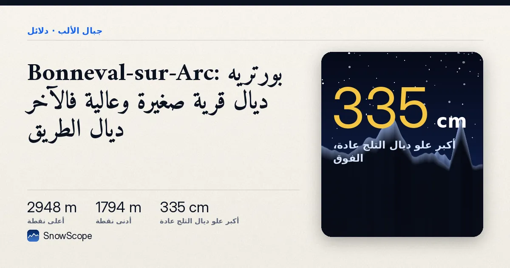

Bonneval-sur-Arc: بورتريه ديال قرية صغيرة وعالية فالآخر ديال الطريق
Bonneval-sur-Arc محيطة بـ الجبال العالية ومقطوعة بـ الشتا. كول دو لـ Iseran، أعلى طريق معبدة فـ الألب بـ 2,764 م، كتسدّ للسيارات من نونبر لحد يونيو، واخ تخلّي قرية صغيرة فيها حوالي 285 نسمة معها محطة تلج هادية وفيها شوية تاج. التجاوز ديالها هو المقصود: ارتفاع علي بزاف، تلج منتظم، واقل الناس.
شوف توقعات التلج مباشرة ديال Bonneval-sur-Arc فالتطبيق ديال SnowScopeالعلو ديال التلج، التنبيهات والخريطة 3D، فابور.
قرية فالجبال
Bonneval كاينة فـ Haute-Maurienne، فحدود إيطاليا وجزء منها فـ حديقة Vanoise الوطنية. القرية مسجلة كـ واحد من أجمل القرى ديال فرنسا، معها السقوف ديال الحجر التقليدي والشوارع الضيقة. الأرض اللي حولها كتصعد من 1,759 م لـ 3,642 م، وهاد الحاجة كتقول لك مرة واحدة بلي الشتوات هنا بردة وطويلة.
فالشتا، وادي Arc كيخلص فـ Bonneval. كتوصل ليها غير من الجهة ديال Maurienne. هاد الجنبة بعيدة حقيقية: قبل ما تتسافر، شوف حالة الطرق فالوادي وتأكد بلي الليفت كتشتغل فـ الموقع الرسمي.

منطقة صغيرة، ارتفاع كبير
منطقة التلج صغيرة فـ الحجم: حوالي 10 ليفت و 20 كم ديال البيست، كتصعد من 1,794 م لـ 2,948 م. هاد ما هي كبيرة بـ معايير Savoie، لاكن الارتفاع هو اللي مهم هنا. الفرق العمودي هو 1,154 م، وكتقدر تتعلم المنطقة كاملة فـ الصباح. بـ نسبة للعايلات مع الصغار والمبتدئين اللي بغاية التلج الهادي، هاد ميزة.
الزاي اللي كيرغبو فيها أكثر من البيست المعلمة خاص تروح مع الموجّه. تزلج بره البيست خاص تقرا نشرة Météo-France ديال الانهيارات كل صباح. قراها قبل ما تخرج من البيست.
العلو ديال التلج حسب الموسم
الارتفاع كيدي لـ Bonneval تلج أكثر من اللي الحجم ديالها قال. فالقاعدة، 1,794 م، العمق المعتاد فـ 46 شتوات اللي فاتو حوالي 99 سم، شي الحاجة اللي منتجعات كبيرة كتشوفها غير فمنتصف الجبل. هاد كايفي بـ نسبة للتزلج، لاكن هو رقيق أول الموسم وكيقدر يخرّج الحجارة.
فمنتصف الجبل، 2,371 م، النمط أوضح. العمق المعتاد ديال التلج هو 26 سم فـ نونبر، 66 سم فـ دجنبر، 103 سم فـ يناير، 128 سم فـ فبراير و 134 سم فـ مارس. العمق الذروة المعتاد هنا هو حوالي 172 سم. فهاد الارتفاع كاين الأقل 50 سم ديال التلج فالأرض لـ 15 أسبوع فـ تسع شتوات من عشرة.
الجهة الفوقانية كتبقى غطية لحد الربيع
بقرب القمة، 2,948 م، الموسم أطول بزاف والتلج أعمق. العمق الذروة المعتاد هو حوالي 335 سم، أكثر من ثلاتة مرات القاعدة. هنا الشهر اللي فيه التلج أعمق هو أبريل، مع حوالي 272 سم معتاد. التلج الأول كيوصل هاد الارتفاع حوالي 30 شتنبر، والبقايا الأخيرة كتذوب حوالي 19 يونيو.
هاد الفرق فالارتفاع هو بـ نسبة ليه Bonneval كتبقى مفتوحة بـ متأخر فـ الربيع. حتى فـ ماي، القمة عادة كايفيها حوالي 214 سم. الجهة الفوقانية هي اللي الموسم كيتمد فيها لأطول وقت.
متى تجي
بـ نسبة بـ تلج معتمد فالقاعدة ديال المنطقة، فبراير هو أحسن شهر. أحسن أسبوع ديال الموسم فـ 1,794 م فيه الأقل 50 سم فـ 85 بالمية ديال الشتوات. التلج كيبلغ ذروتو فـ فبراير ومارس. فـ نونبر، القاعدة كتقدر تكون رقيقة؛ تّوقع حوالي 10 سم معتاد. شنو لحد دجنبر الأقل إذا كانت بغيت أحسن الأحوال فالقاعدة.
أعلى، الموسم طويل وموثوق. التلج الأول كيوصل لـ 2,371 م حوالي 7 أكتوبر. فمنتصف نونبر، 26 سم معتاد هناك. من دجنبر لحد الأخير، 50 سم أو أكثر معتاد لـ 15 أسبوع فـ تسع شتوات من عشرة.
الاتجاهات عبر الوقت
التلج هنا كان مستقرّ. فالقاعدة، 1,794 م، الذروة الوسطية كانت حوالي 100 سم فأول خمستاش شتوات فـ السجل و حوالي 101 سم فـ الخمستاش الأخيرة. فمنتصف الجبل، 2,371 م، الذروة نزلت شوية من حوالي 176 سم لـ حوالي 169 سم، لاكن مجموع الأيام مع التلج فالأرض نزل أكثر، من حوالي 256 لـ 225. الشتا اللي فاتت، 2025-26، كانت قريبة من المعتاد معها ذروة حوالي 167 سم فهاد الارتفاع.
نصايح للي كيتزلجو
- وصل Bonneval من وادي Maurienne غير؛ طريق Iseran مسدودة فالشتا. شوف حالة الطرق فالوادي قبل ما تتسافر.
- بـ نسبة للعايلات والمبتدئين، فبراير ومارس كيعطيو التلج الأكثر موثوقية فالقاعدة ومنتصف الجبل.
- التلج الرقيق فـ نونبر معناه الحجارة كقدر تكون برّا فالقاعدة ديال المنطقة. شنو لحد دجنبر إذا كانت بغيت الغطاء.
- زاي تزلج بره البيست خاص تروح مع الموجّه وتقرا نشرة Météo-France ديال الانهيارات كل صباح.
- قبل ما تروح، تأكد من الموقع الرسمي بلي شنو الليفت اللي مفتوح.
على هاد الأرقام
العلو ديال التلج فالمحطات هو أكثر تلج فالجهة الفوقانية فالتاريخ المكتوب؛ هادو تقديرات لمنطقة، ماشي قياس فنقطة وحدة. التوقعات يمكن تتبدل. ديما شوف النشرة الرسمية ديال الانهيارات قبل ما تخرج من البيست.
النشرات الرسمية ديال الانهيارات: Météo-France BERA
كيفاش تستاشهد بهاد المقال
للبحث، التعليم ولا الصحافة: الأرقام والرسومات تقدر تعاود تخدم بيهم بحرية تحت CC BY 4.0 مع هاد الاستشهاد.
SnowScope (2026), Bonneval-sur-Arc: بورتريه ديال قرية صغيرة وعالية فالآخر ديال الطريق, https://snowscope.app/blog/ar/2026/11/bonneval-sur-arc-portrait-small-high-village-snow.html, تشاف ف 2026-11-09
SnowScope (Atlas Labs). (2026, November 9). Bonneval-sur-Arc: بورتريه ديال قرية صغيرة وعالية فالآخر ديال الطريق. SnowScope snow reports. https://snowscope.app/blog/ar/2026/11/bonneval-sur-arc-portrait-small-high-village-snow.html
BibTeX
@misc{snowscope2026bonnevalsurarcportraitsm,
author = {{SnowScope (Atlas Labs)}},
title = {Bonneval-sur-Arc: بورتريه ديال قرية صغيرة وعالية فالآخر ديال الطريق},
year = {2026},
month = nov,
howpublished = {\url{https://snowscope.app/blog/ar/2026/11/bonneval-sur-arc-portrait-small-high-village-snow.html}},
note = {Published 2026-11-09 11:38 UTC; accessed 2026-11-09}
}· CC BY 4.0 · الطريقة، الداتا والأدوات →
Bonneval-sur-Arc: التلج والحرارة حسب العلو، هاد الشتا مقارنة مع اللي فاتت (الأدوات) →
تابع Bonneval-sur-Arc
فابور: ميساج ملي يجي التلج، والتوقعات كل صباح.